SHEAR PANELS, RIBS & CUT-OUTS
This section details the technique for analysing shear panels and ribs. It also looks at the effect of large cut-outs regions in the skin regions on the overall stress field of the aircraft.
ANALYSIS OF SHEAR PANELS
Thin metal skins are used in the manufacture of most aircraft. These skins are only capable of resisting in-plane tension and shear loads, but buckle under very small compressive loads.
Longitudinal stringers are then used to :
a) Reduce the effective length in compression of the skin.
b) Transmit point loads applied to ribs or fuselage frames onto the plane of the skin When shear panels/ribs have loads applied to them, the stringers or stiffening members must be aligned with the direction of the applied load. If this is impossible, the load should be applied at the intersection of two stiffeners so that each can resist the load component in that direction.
Shear panels look something like this:
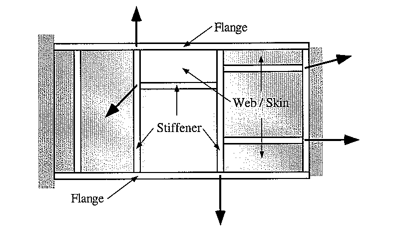 |
Figure 113: Cantilever beam made from shear webs and stiffener members with various loads |
When analysing such a structure or any other panel carrying directly applied loads and made from stiffener members and skin we are interested in determining :
a) The shear flow distribution in the skin
b) The stiffener/Flange loads
EXAMPLE :
The short cantilever beam carries concentrated loads. Determine the stiffener loads and shear flow distribution in the web panels. Assume all skin to be effective in shear only.
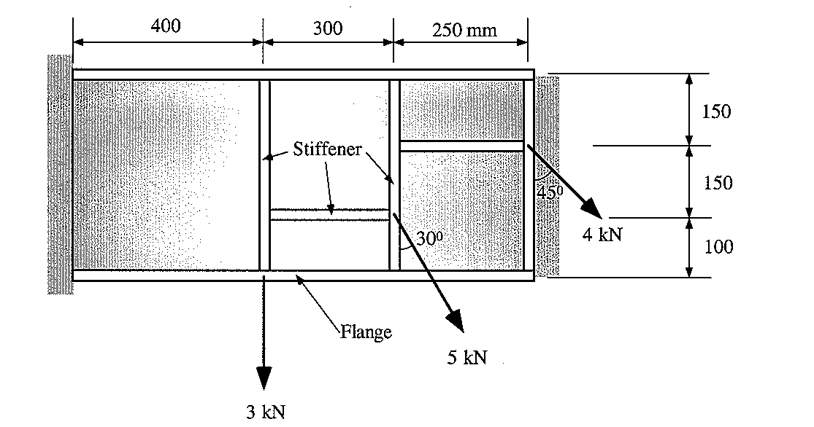 |
Figure 114: Cantilever beam with concentrated loads |
a) Draw FBD of beam indicating direction of unknown shear flows in web
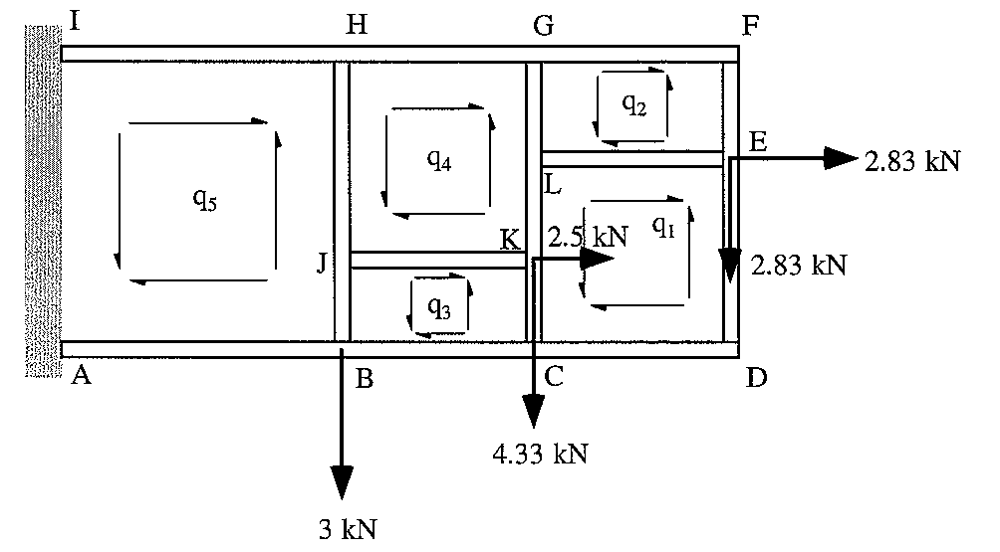 |
Figure 115: FBD of cantilever beam including orientation of unknown shear flows |
Note : In this type of analysis it is necessary to assume that:
- Webs are only effective in carrying shear loads
- Stiffeners and flanges carry only direct loads
- Stiffeners DO NOT carry bending moments, these are carried by extra stiffeners in the direction of the load and by the webs as shear flows.
b)Draw FBD of stiffeners LE & DEF and solve for q, and q,
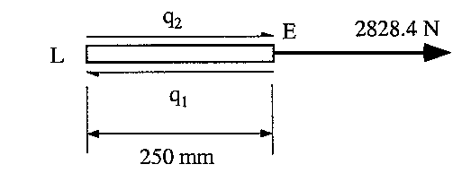 |
Figure 116: FBD if stiffener LE |
which gives:
$$q_1 - q_2 = 11.314 \text" N/mm" $$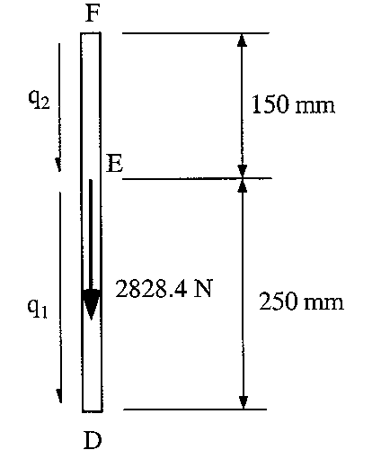 |
Figure 117: FBD of stiffener |
gives
$$ q_1 + 0.6 q_2 = -11.314 \text" N/mm" $$Solving equations simultaneously gives:
$$ q_1 = -2.828 \text" N/mm , " q_2 = -14.142 \text" N/mm" $$c) Draw FBD of stiffeners JK & CKLG and solve for q3 and q4
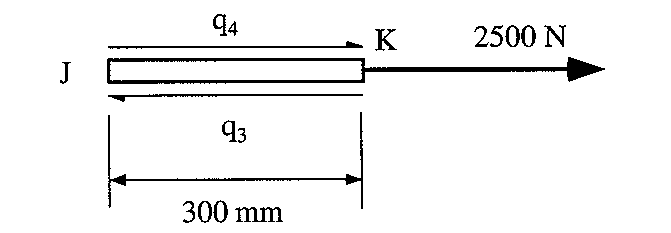 |
Figure 118: FBD of stiffener JK |
which gives:
$$ Σ F_x = 0 = (q_4 - q_3)300 + 2500 $$ $$ q_3 - q_4 = 8.333 \text" N/mm" $$
|
$$ Σ F_y = 0 = 150q_2 + 250q_1 - 300q_4 - 100q_3 - 4330.1 $$
which gives: $$ q_3 + 3q_4 = — 71.584 \text" N/mm" $$Solving equations simultaneously gives: $$ q_3 = -11.646 \text" N/mm, " q_4 = -19.979 \text" N/mm " $$ |
d) Draw FBD of stiffeners BJH and solve for q5
|
$$ Σ F_y = 0 = 300q_4 + 100q_3 - 400q_5 - 3000 $$
which gives: q5 = -25.396 N/mm |
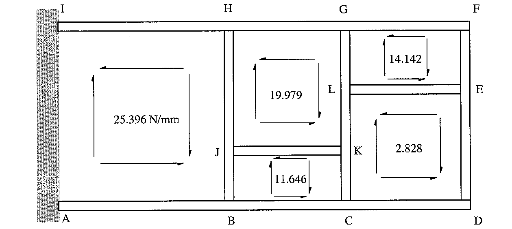 |
Figure 121: FBD of cantilever beam with resolved shear flows |
e) Calculate flange and stiffener load distributions
These loads can be calculated by using the equilibrium equation at various cuts along the length of each of the stiffeners:
Flange IHGF
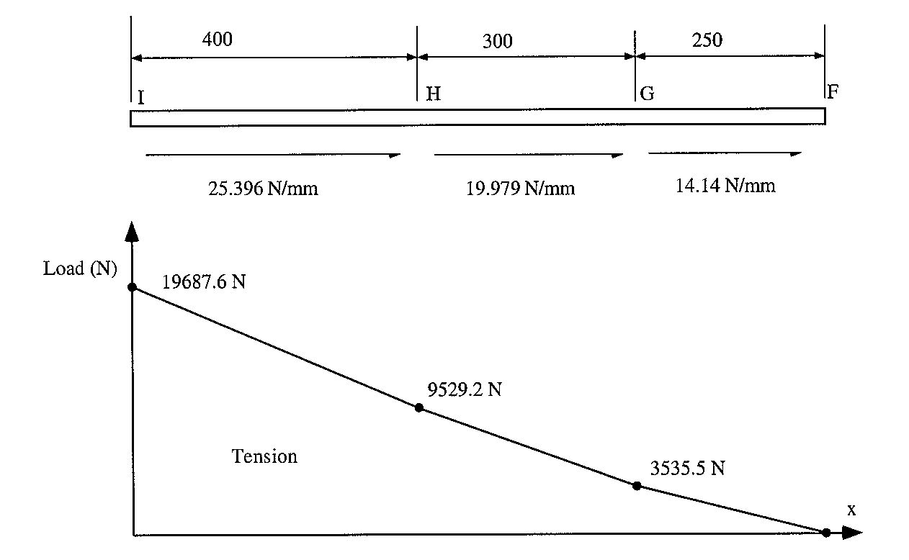 |
Figure 122: Shear flow and load distribution in flange IHGF |
Flange ABCD
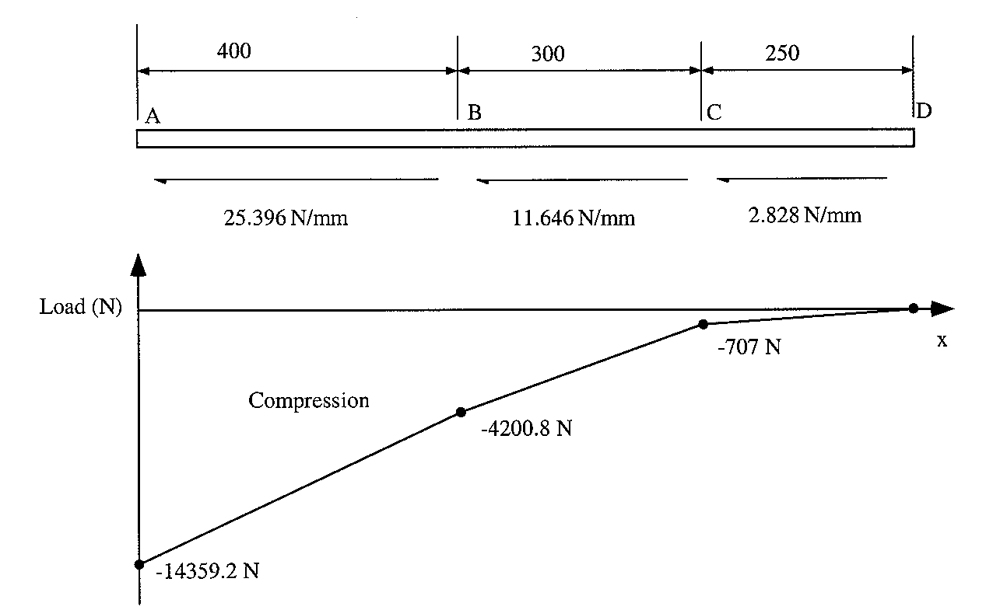 |
Figure 123: Shear flow and load distribution in flange ABCD |
Stiffener BJH
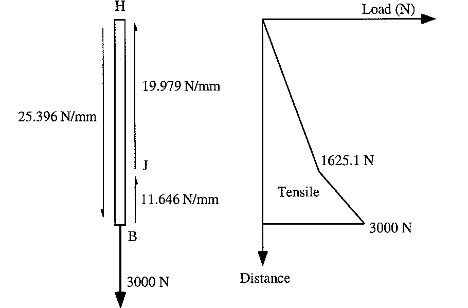 |
Figure 124: Shear flow and load distribution in stiffener BJH |
Stiffener JK
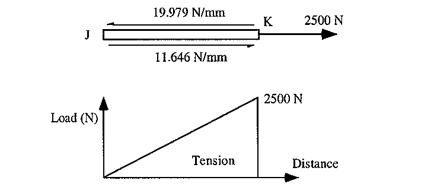 |
Figure 125: Shear flow and load distribution in stiffener JK |
Stiffener CKLG
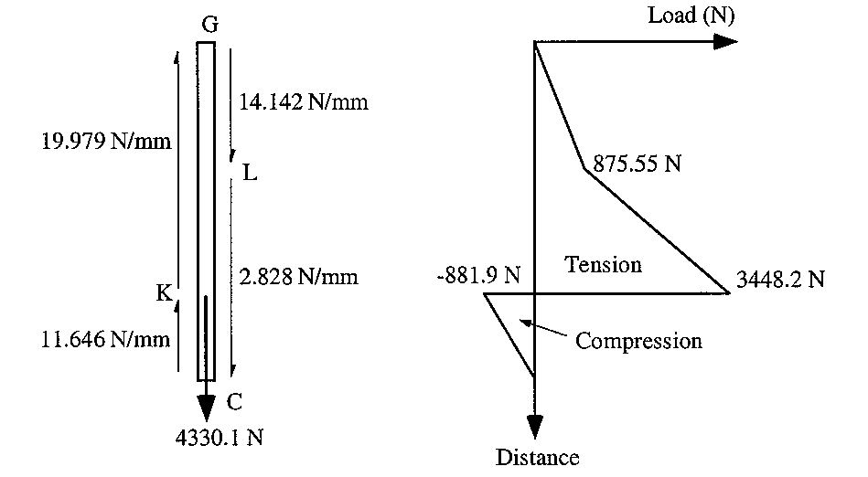 |
Figure 126: Shear flow and load distribution in stiffener CKLG |
Stiffener LE
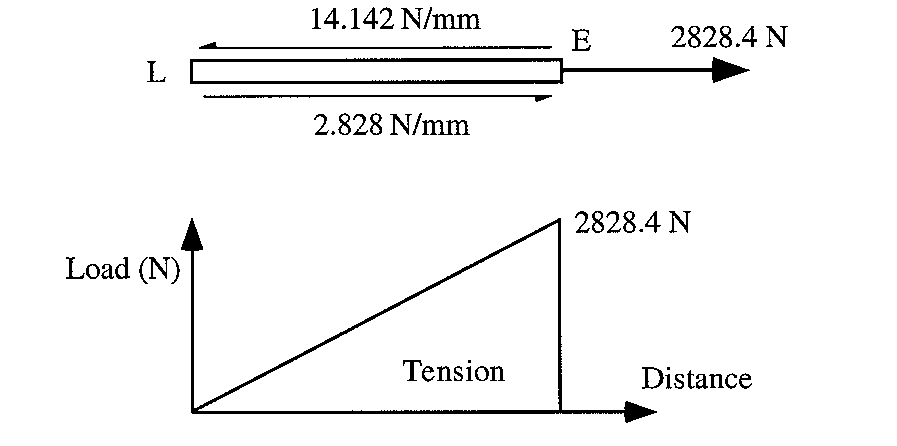 |
Figure 127: Shear flow and load distribution in stiffener LE |
Stiffener DEF
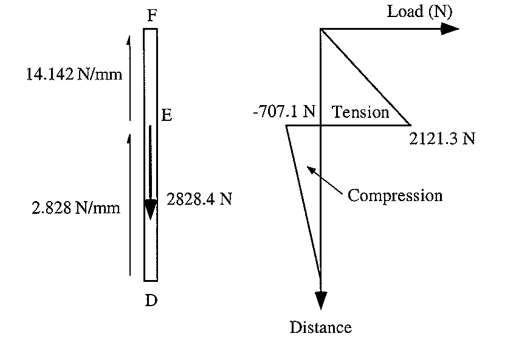 |
Figure 128: Shear flow and load distribution in stiffener DEP |
ANALYSIS OF WING RIBS
Wing ribs maintain the shape of the wing section, transmit the externally applied loads to the skin and reduce the column length of the stringers and skin panels thus increasing their buckling strength.
External loads in the plane of the rib change the shear load distribution in the wing across the rib, inducing shear flows around its perimeter.
EXAMPLE :
A cantilever beam 2400 mm long with 6 booms has at its free end a rib to transmit the applied load to the skin. Determine the shear flows in the web panels and axial loads in the stiffening members. Boom areas A1=A2=A7=A8= 500 mm2, A4=A5 = 1000 mm2.
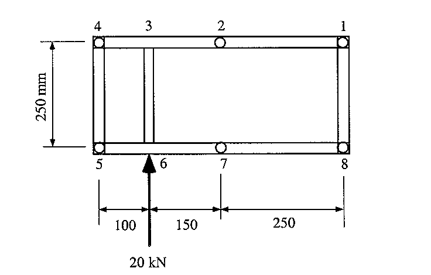 |
Figure 129: Beam rib used to transmit load to adjacent skin |
Using the methods shown previously, the shear flow distribution in the skin surrounding the rib is:
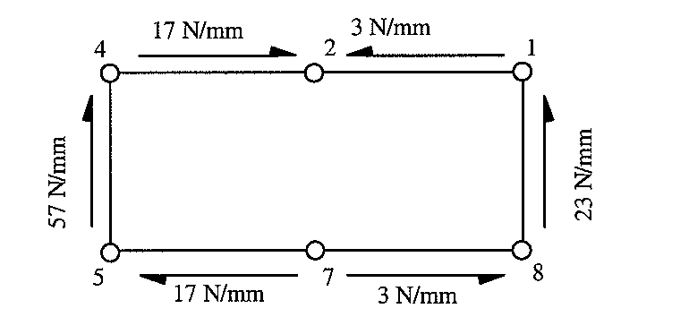 |
Figure 130: Shear flow distribution in beam skin |
Since the aim of the rib is to transmit the applied load to the adjacent skin, the shear flow distribution acting on the rib and its surrounding stiffeners is:
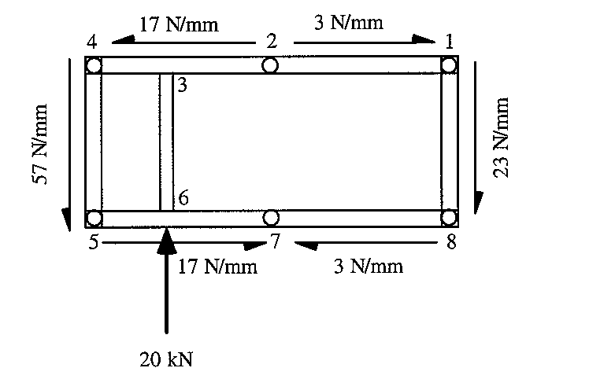 |
Figure 131: Applied external loads and shear flows to rib |
Consider the section of the rib to the left of points 3 & 6
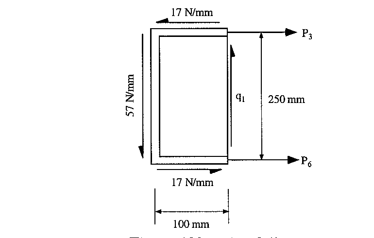 |
Figure 132: FBD of rib cut before section 3 - 6 |
Now use the 3 equilibrium equations to solve for, P3, P6 & q3-6.
$$ Σ F_x \text" --> " P_3 = -P_6 $$ $$ Σ F_y \text" --> " q_{3-6} = 57 \text" N/mm" $$ $$ Σ M_6 = 0 = 57×250×100 + 17×100×250 - P_3× 250 \text" --> " P_3 = 7400 \text" N" $$It is now necessary to consider the stiffener 3-6
|
$$ Σ F_y = 250 (-57 + q_2) + 20,000 = 0 $$
|
Draw a FBD of the rib showing the shear flow distribution in the web:
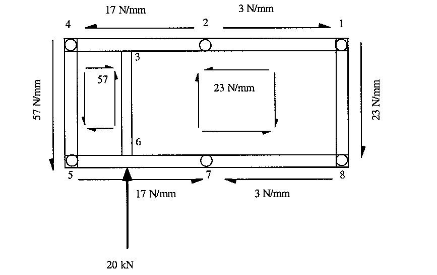 |
Figure 134: FBD of rib with resolved shear flows |
From this the load distribution in each of the stiffeners can be calculated. Notice that both stiffener 8-1 and 4-5 carry no axial loads.
For Stiffener 1-2-3-4:
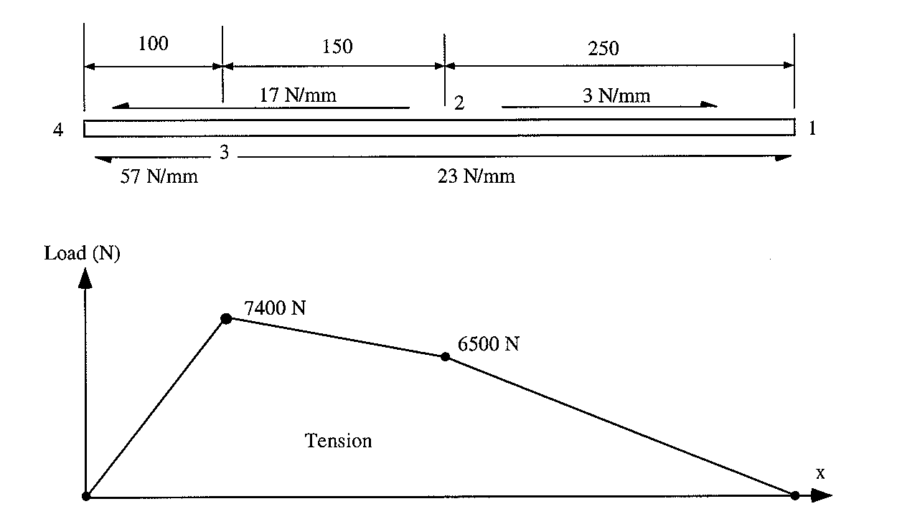 |
Figure 135: Shear flow and load distribution in stiffener 1-2-3-4 |
For stiffener 5-6-7-8 the loading has the same magnitude as for 1-2-3-4 but it's in compression.
For stiffener 3-6:
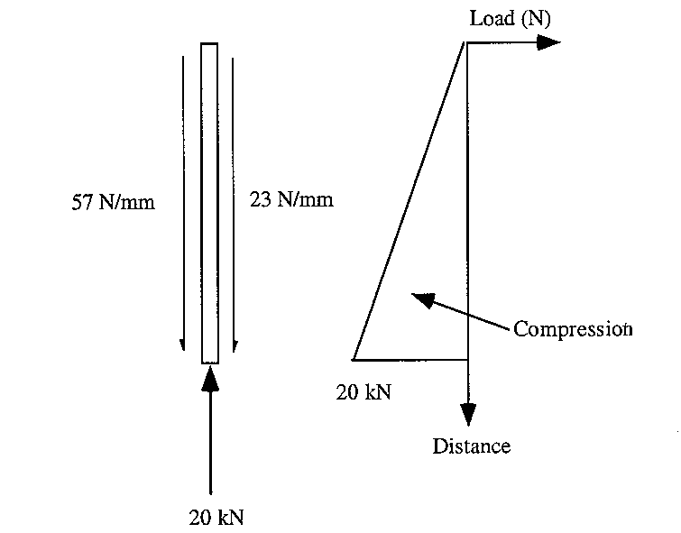 |
Figure 136: FBD of stiffener 3-6 |
CUT-OUTS IN WINGS AND FUSELAGES
In our analysis so far, wings and fuselages have been closed boxes stiffened by ribs, frames and stringers. In practise, however openings must be provided to allow access to the inside of an aircraft.
These openings or cut-outs produce discontinuities in the otherwise continuous structure causing the loads to be re-distributed in the vicinity of the cut-out region, thus affecting the loads in the skin, stringers, ribs and frames of the wing or fuselage.
Cut-Outs in Wings
As for all the work in this section we need to draw FBD of the sections analysed and equate the internal and external loads to equilibrium.
EXAMPLE :
Determine the shear loads in the webs and axial loads in the flanges of the three cell box beam under an applied 10 KNm torque when the central cell has a skin panel removed.
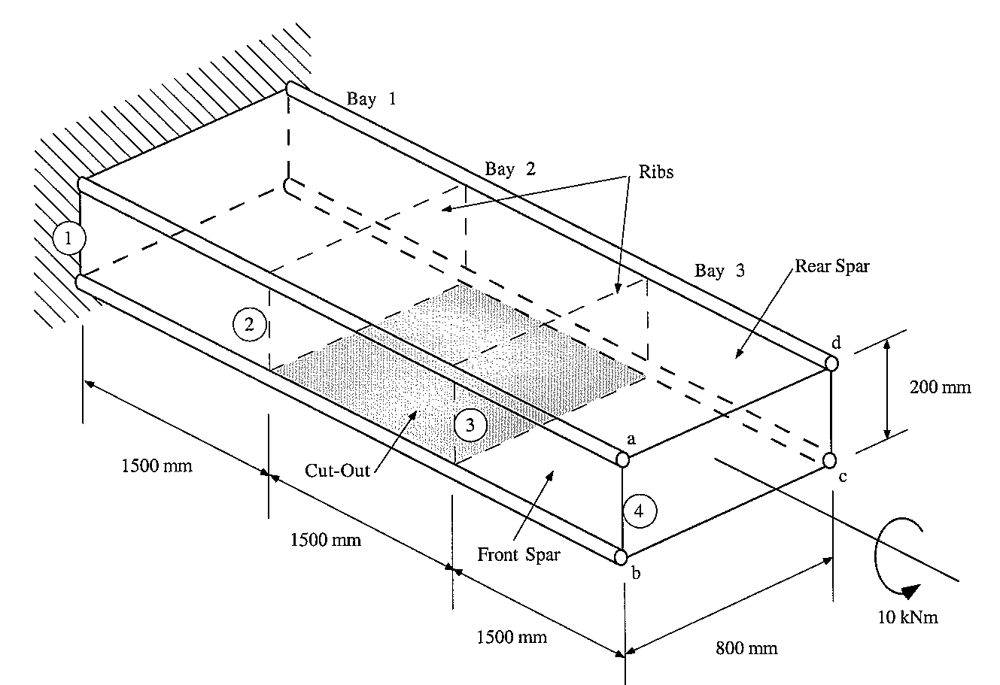 |
Figure 137: Three-bay box beam structure with cut-out in central section |
If this beam was continuous, without a cut out, and we disregarded any built-in effects the shear flow in the all the skin panels would be :
$$ q = T/{2A} = {10×10^6}/{2×200×800} = 31.25 \text" N/mm" $$The four booms would carry no load.
However, the removal, of the cut-out region creates a torsionally weak open channel.
To analyse this structure we need to do the following:
a) Determine the spar web shear loads and boom axial loads in the bay with the cut-out.
In order to do this relatively easily we need to assume that the applied torque is transmitted through bay 2 only by the front and rear spars as a bending moment.
This is achieved by transforming the torque into a downwards shear load at section 3 in the front spar and upwards at section 3 in the rear spar. These loads can then only be resisted by boom loads P , as shown.
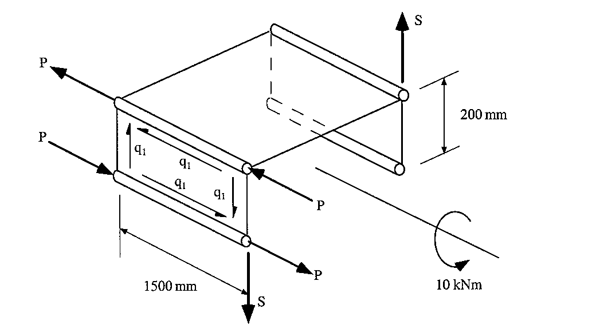 |
Figure 138: Distribution of torque in central bay |
The couple generated by the shear loads 'S' must be equal to the applied torque, so:
so
This shear load can only be resisted by the spar web, hence the shear flow in the web is:
$$ q_1 = 12500/200 = 62.5 \text" N/mm" $$To determine the load 'P' carried by the booms we consider the equilibrium of the bottom boom.
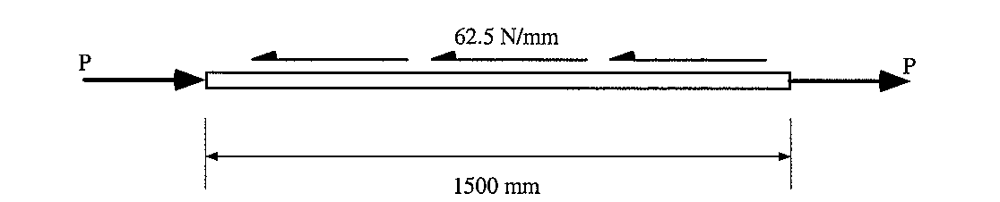 |
Figure 139: Equilibrium of bottom boom in front spar |
These boom loads 'P' are reacted by loads in the booms of bays 1 and 3, which are then transmitted to the adjacent spar webs and skin panels.
b) Determine web and skin shear loads and boom axial loads in the bays adjacent to cut-out
To do this we first need to draw a FBD of the bay to be analysed, in this case we will look at the third bay.
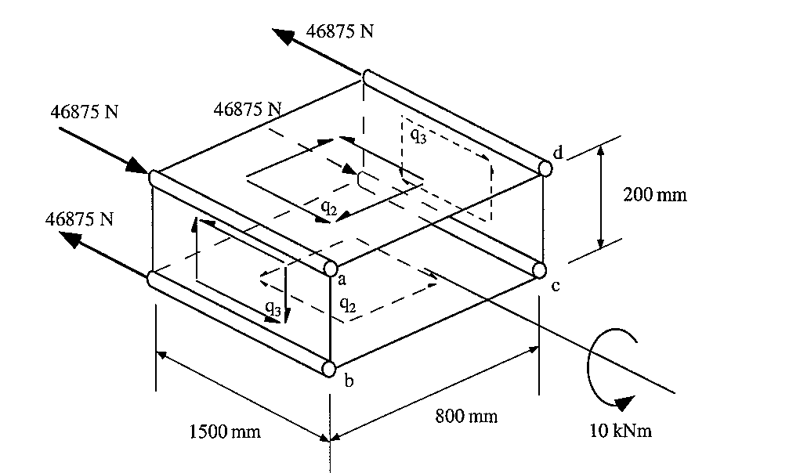 |
Figure 140: Equilibrium analysis of bay 3 with resultant boom loads from bay 2 |
Due to the structure's symmetry, the webs and skins have the same shear flow.
As there are two unknown shear flows we need two equations to solve the system. We start by looking at boom ‘a’.
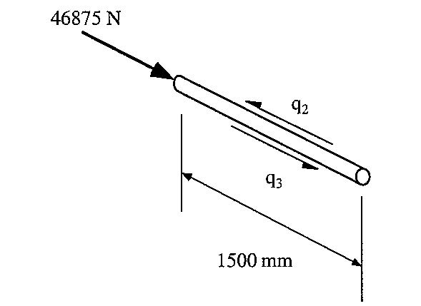 |
Figure 141: Equilibrium of boom |
givinh that:
Therefore
giving that:
Solving these equations simultaneously gives that:
We now need to draw the axial load distribution in one of the booms, in this case 'a’.
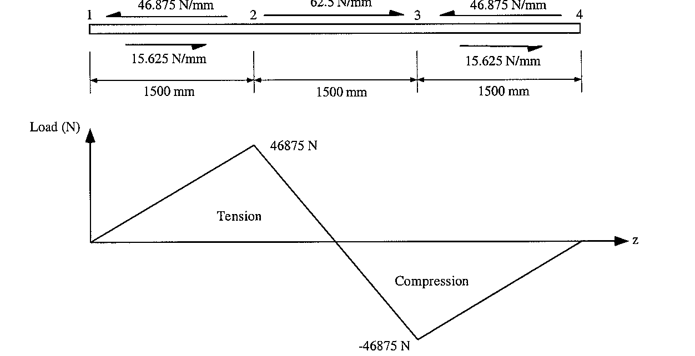 |
Figure 142: Shear flow and axial load distribution in boom 'a’ |
This is the distribution for booms 'a’ and 'c', but for booms ‘b' and 'd' the axial load distribution would have the opposite sign, although it would have the same magnitude.
c) Determine ribs shear flow distribution
To do this we need to look at the equilibrium of the webs and skin at stations 2 & 3.
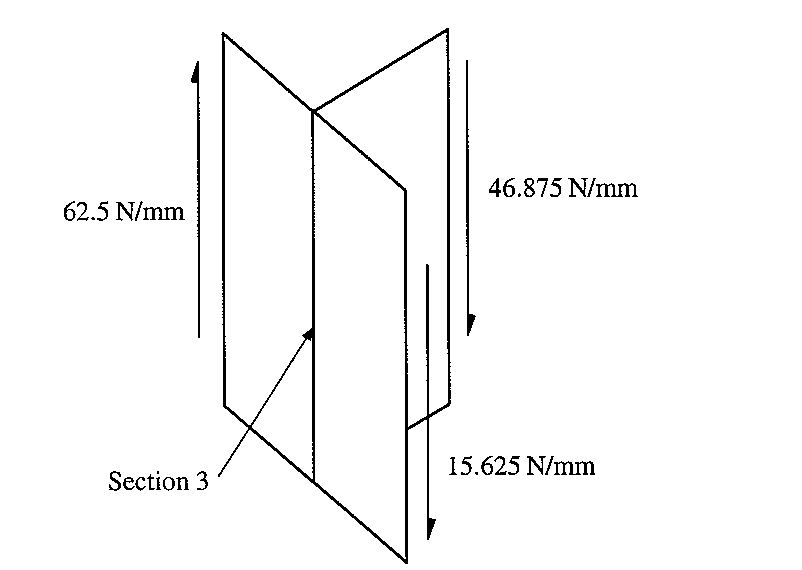 |
Figure 143: Equilibrium of junction at section 3 between spar webs and rib skin |
From the shear flow analogy it is evident that the shear flow acting in the rib is of magnitude 46.875 N/mm.
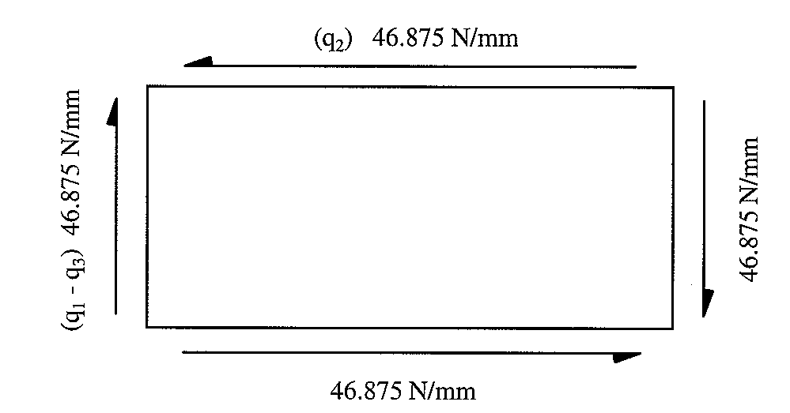 |
Figure 144: Shear flow distribution in ribs |
This example has dealt with a beam with an applied torque, we now need to look at how to determine the effect of cut out if shear loads are applied.
EXAMPLE :
Determine the shear and axial loads in a 3 bay wing box under applied shear loads due to a cut-out panel in the second bay.
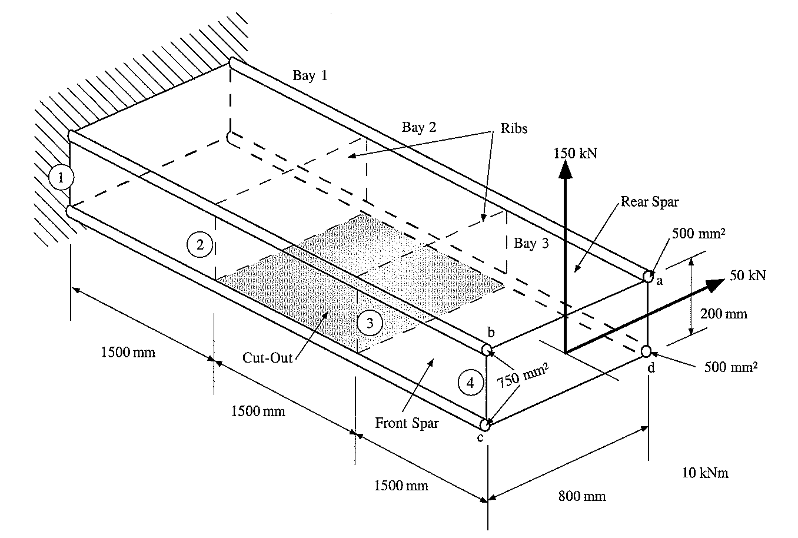 |
Figure 145: Three bay box beam structure with cut out in central bay loaded with 2 shear forces at free end |
The easiest way to carry out this analysis is to do the following:
1) Determine the shear flow distribution as if the box were continuous, ie: without a cut out.
The cross sectional properties are:
and the shear flow distribution is:
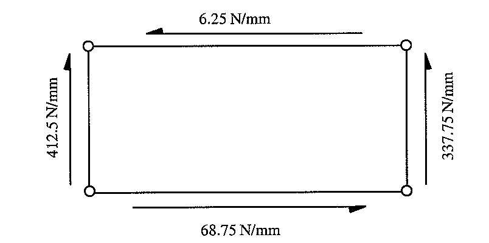 |
Figure 146: Shear flow distribution in continuous beam |
2) Determine the cut-out section shear flows. Since the loading is not at the shear centre of the section the easiest way to determine these values is to do a force and moment equilibrium of the section.
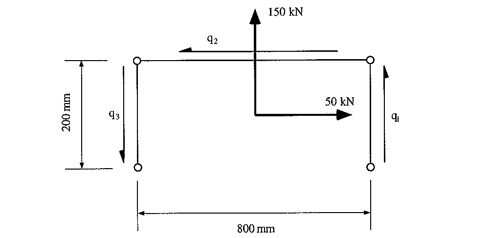 |
Figure 147: Determination of shear flow for cut-out section |
Summing forces in about the x-axis:
Summing forces in about the y-axis:
Summing moments about symmetry line:
solving the three equations simultaneously gives:
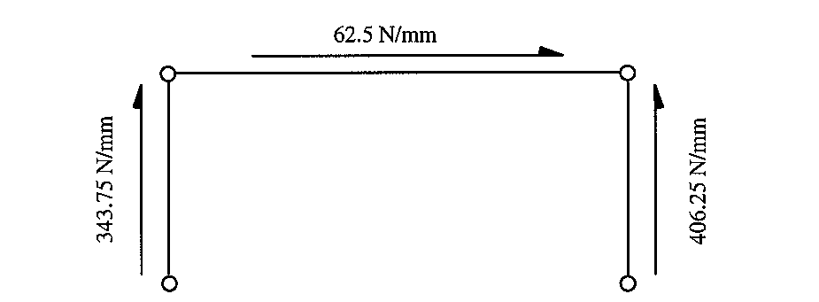 |
Figure 148: Shear flow distribution in cut-out bay |
The difference between these two shear flow distributions, that with and without a cut-out, has to somehow be carried by the booms. So we now need to determine the correction shear flow distribution carried by the boom.
3) Determine the correction shear flow carried by the booms their axial loads and the correction shear flows for adjacent bay skins.
This is done by subtracting from the cut-out shear flow distribution the continuous closed beam shear flow distribution.
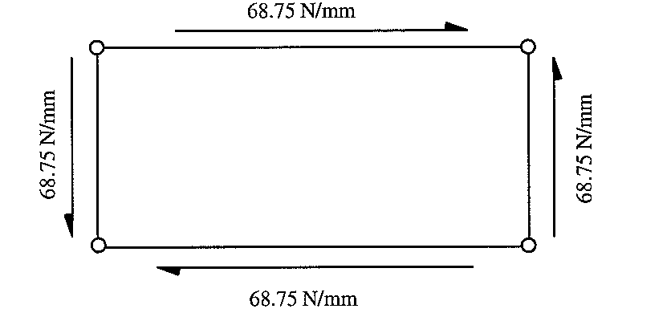 |
Figure 149: Correction shear flow carried by booms |
We now need to draw the corrected shear flows in the section where the cut-out is so that we can determine the loads carried by each of the booms.
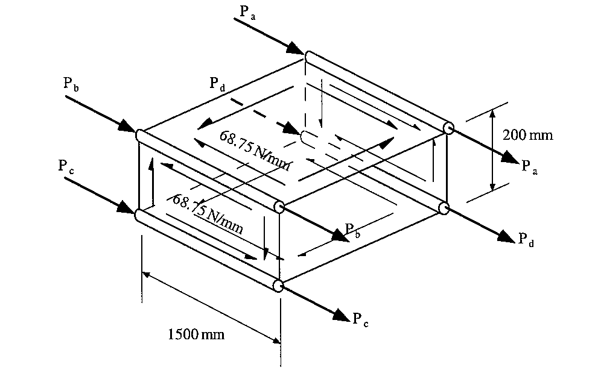 |
Figure 150: Correction Shear flow distribution in cut-out bay with unknown boom loads |
The only assumption we can make here is that the boom loads have the same magnitude on either side of the cut-out region and in the same direction.
The loads at the ends of any of the booms can now be determined by considering their equilibrium. For example for boom b:
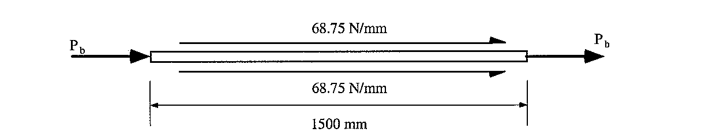 |
Figure 151: Equilibrium of boom 'b' |
And in a similar way you can find that:
These boom loads produce correction shear flows $q_1', q_2', q_3', q_4' $, in the skin and web panels of the adjacent bays 1 & 3.
We first need to draw a FBD of bay 3 to be able to do the analysis.
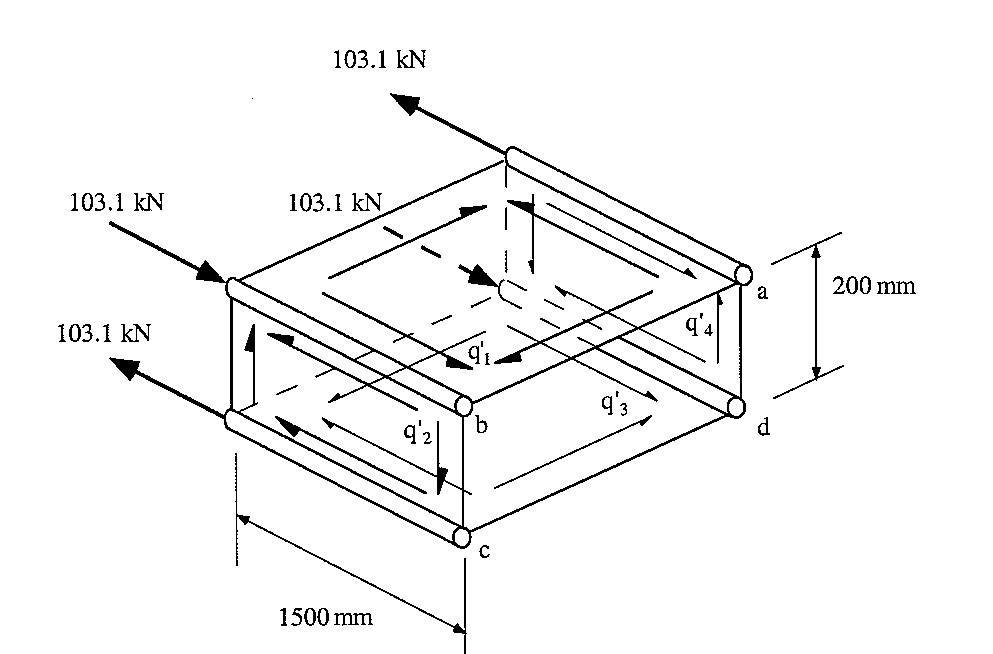 |
Figure 152: FBD of bay 3 with loads carried by booms and unknown correction shear flows |
To solve for these unknown correction shear flows we need to solve for equilibrium of the flanges and about the x & Moments about the z-axis.
For equilibrium at boom ‘b' the following equation is obtained:
From equilibrium of boom 'a’ the following equation is obtained :
From equilibrium about the x-axis the following equation is obtained:
From Moment equilibrium about the y-axis the following equation is obtained:
Solving these 4 equations simultaneously gives that:
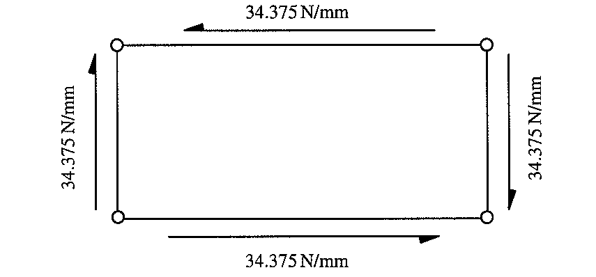 |
Figure 153: Correction shear flow in bays 1 and 3 |
These correction shear flows can now be superimposed onto the original continuous beam shear flows, giving the following distribution:
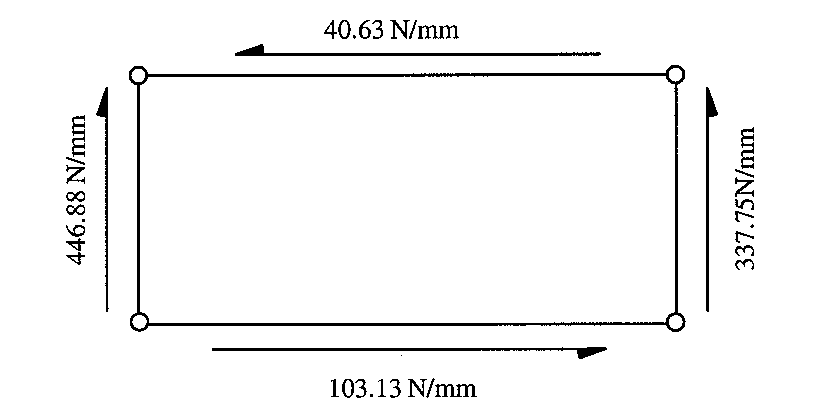 |
Figure 154: Final shear flow. distribution in bays 1 & 3 |
And if we consider the equilibrium of the rib at location 3, we obtain the following shear flow distribution:
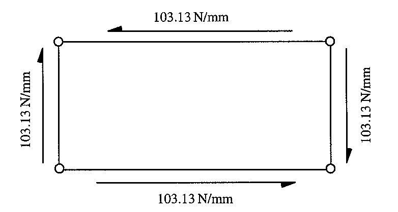 |
Figure 155: Shear flow distribution of rib at location 3 |
With the axial loads in the booms found by determining the loads generated by the bending moment at different z locations and superimposing to this the axial loads generated by these shear flows.
Cut-Outs in Fuselages
When you have large openings in an aircraft fuselage ribs, rings or rigid frames may be inserted to carry the loads induced by the opening. The analysis of such sections may be carried out with the method described in previous section.
If small openings are incorporated in fuselages, such as the cut-outs for windows, a relatively easy approximation method can be used to determine their (cut-outs) effect on the overall shear flow distribution of the section.
Consider a fuselage section with a row of windows.
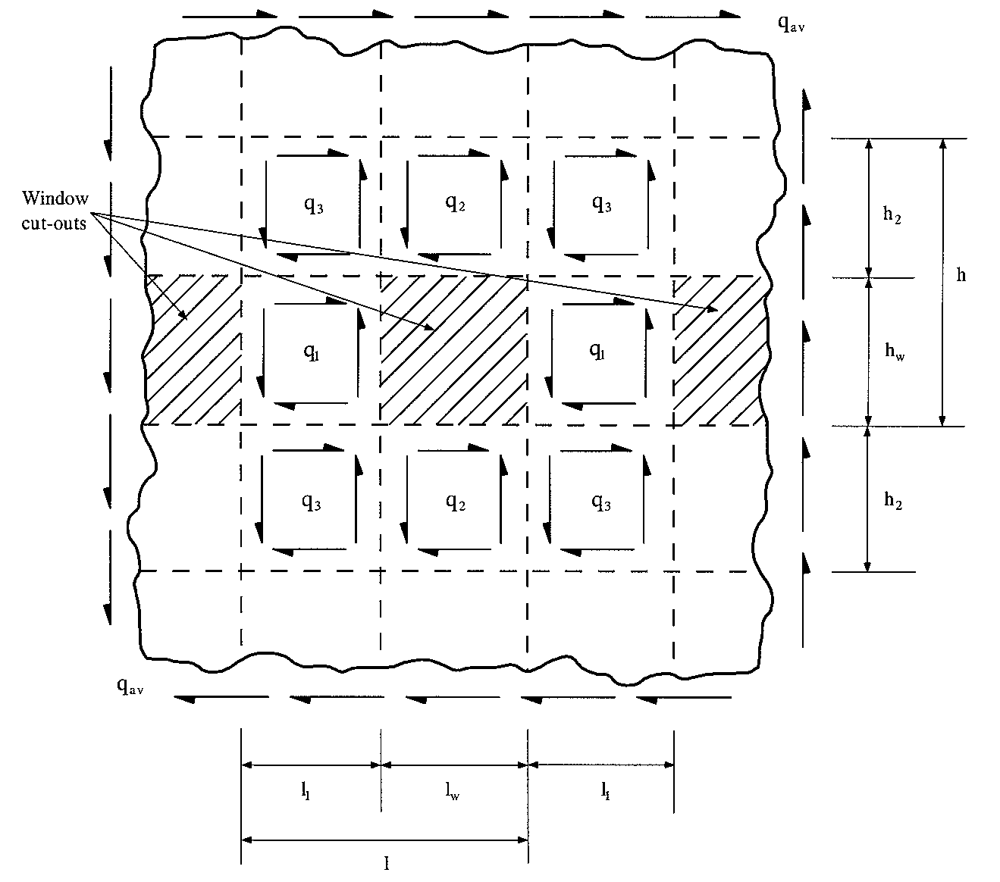 |
Figure 156: Fuselage section with window cut-outs |
To determine the magnitude of the average shear flow ‘$q_{av}$', we assume that the cut-outs are not there, performing the usual shear flow analysis.
We next consider horizontal equilibrium between two such window cut-outs.
$$q_1 l_1 = q_{av} l$$giving that:
$$ q_1 = l/l_1 q_{av} $$Considering vertical equilibrium between two window cut-outs.
$$ q_2 h_2 = q_{av} h $$giving that:>/p> $$ q_2 = h/h_2 q_{av}$$
If we now consider either horizontal or vertical equilibrium between two sections without a cut- out we get:
$$ q_3 l_1 + q_2 l_w = q_{av} l $$which when simplified, it gives:
$$ q_3 = q_{av} ( 1 - h_w/h_2 l_w/l_1 ) $$